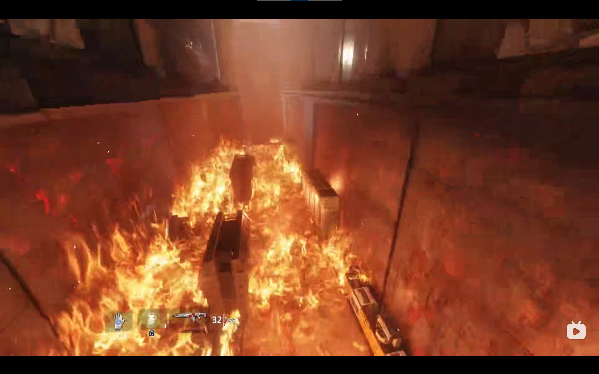
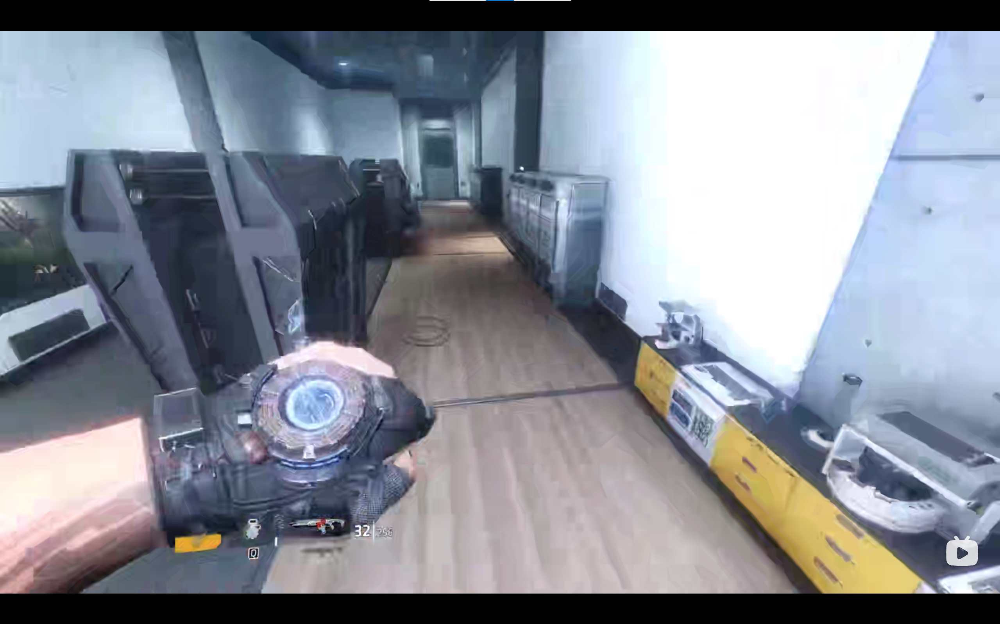
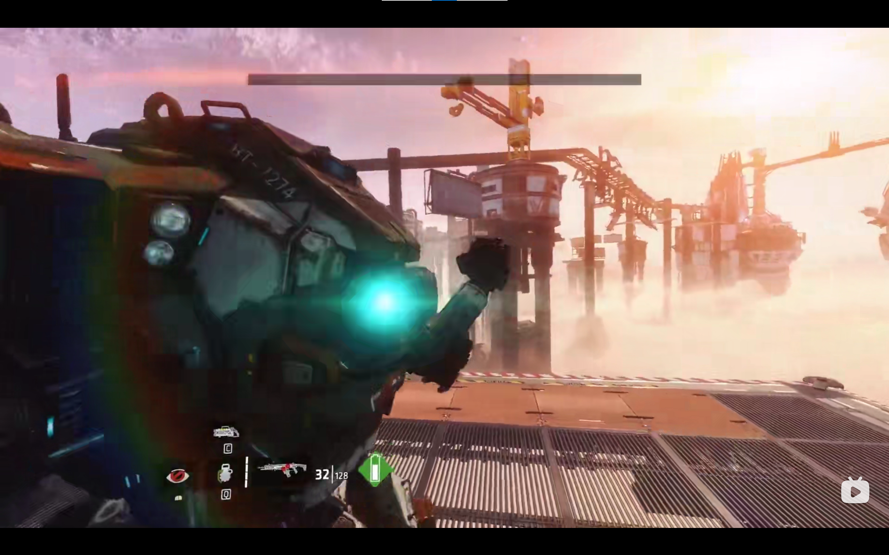
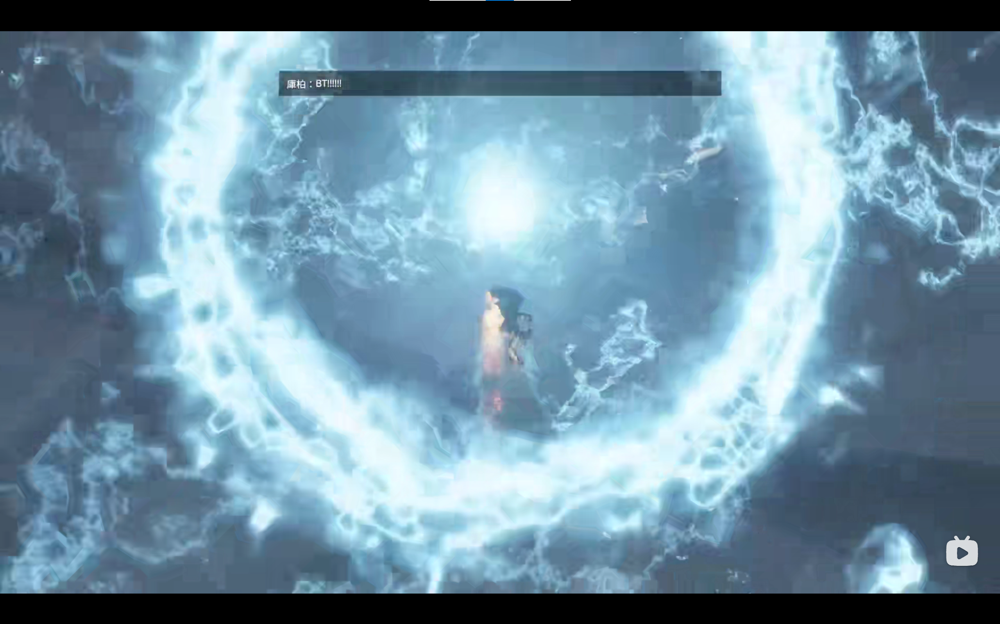

Titanfall 2
It's a story about a rifleman become a legend pilot
--one of the greatest game in the history
This is a big cruel war between plants. Among all the soldiers, the pilot is the most valuable with most advance weapon.
Moreover all of them have a huge iron machine--Titan.
Every war is more like war between pilots with Titans.
During a mission, a poilt gived Cooper(player) all his weaponry and his Titan BT7274 when he was dying
So Cooper must completed the mission for the old poilt
--Prevented enemies from acquiring folded time-weapon.
The mission like
Across the time and fighted with enemies in two "times" at one moment.
Broke into enemy line only himself and his Titan.
At last, they destroyed the weapon with BT's "life"
But,the story of a pilot isn't end!
Another excellent part of the game is the Online-game with other players!
You can fight with other pilots
with many kinds of weapon, skills,
and Titan!

Every single frame like a film!
Slide on the ground, slide the wall and use flue,
to make worderful operate.

From 2016 till now, it could have 95% high praise!
Back to homepage